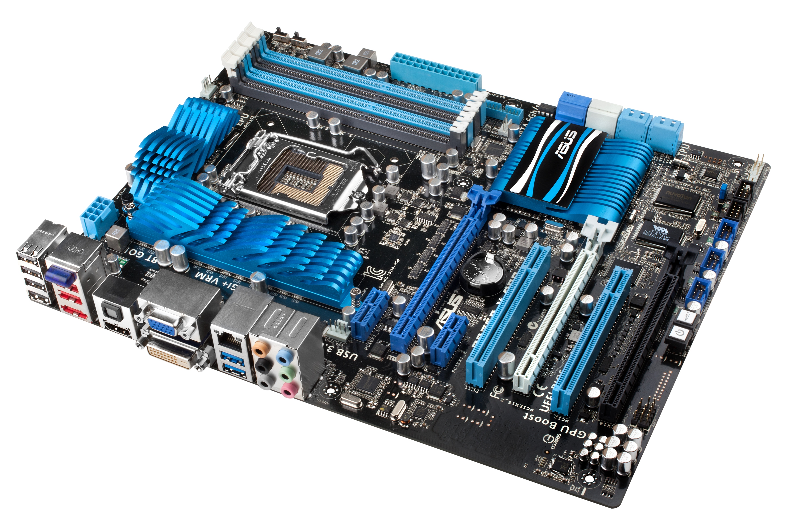

LA SCHEDA MADRE (Motherboard)
La scheda madre o scheda di sistema, anche conosciuta con i termini inglesi motherboard ("scheda madre") o mainboard
("scheda principale"), abbreviata MB, M/B, mobo, è una parte fondamentale di un moderno personal computer: sotto forma di scheda
elettronica principale raccoglie in sé tutta la circuiteria elettronica e i collegamenti di interfaccia tra i vari componenti
interni principali del PC (CPU, memoria e le altre schede elettroniche montate o alloggiate sopra) comprendendo quindi anche i
bus di espansione e le interfacce verso le periferiche esterne.
È responsabile dunque della trasmissione e temporizzazione corretta di molte centinaia di segnali diversi, tutti ad alta frequenza
e sensibili ai disturbi, tra processore e periferiche interne e viceversa. La sua buona realizzazione è quindi un fattore chiave
per le prestazioni e l'affidabilità dell'intero computer.
È composta da un circuito stampato estremamente complesso, ricavato da un sandwich di strati di vetronite e rame: generalmente una
scheda madre può avere da quattro a sei strati di rame. In questi sono ricavate le piste che collegano i componenti, che devono
essere calcolate con molta cura: alle frequenze normalmente adoperate dalle CPU e dalle memorie RAM in uso oggi, infatti, la
trasmissione dei segnali elettrici non si può più considerare istantanea ma deve tenere conto dell'impedenza propria della pista di
rame e delle impedenze di ingresso e di uscita dei componenti connessi, che influenzano il tempo di volo dei segnali da un punto
all'altro del circuito.
Su questo circuito stampato vengono saldati una serie di circuiti integrati, di zoccoli e di connettori; gli integrati più importanti sono
il chipset che svolge la gran parte del lavoro di interfaccia fra i componenti principali e i bus di espansione, la ROM
(o PROM, EEPROM o simile), il Socket per il processore e i connettori necessari per il montaggio degli altri componenti del PC e
della espansione. La struttura attuale delle schede di sistema dei computer è il frutto di un'evoluzione tecnologica che ha portato
a definire una architettura di sistema valida, in linea di massima, per tutti i sistemi di classe personal computer o di potenza paragonabile.
Sotto sono elencati e descritti i tre principali formati attualmente utilizzati, per trovare maggiori informazioni riguardo gli
standard non più utilizzati cliccare sui pulsanti del menu "Storia" ed "Approfondimenti".
ATX
Mini ITX
Micro ATX
La sigla ATX (dall'Inglese Advanced Technology Extended) è uno standard diffuso che riguarda il case, la scheda madre
e l'alimentatore di un Personal Computer. Questo standard fu definito inizialmente da Intel nel 1995, rivisto nel febbraio del 1997 con
la release 2.01 che apporta delle leggere modifiche alla precedente versione 2.0. e nuovamente nel 2003 con la release 2.2, che oggi (2013)
è la più recente. Il precedente standard AT definiva in maniera generica le strutture per i PC-AT di IBM; questo standard fornisce invece
delle indicazioni più specifiche, considerando le dimensioni della scheda madre, la posizione degli slot, dei fori per il fissaggio della
scheda madre al case, dell'alimentatore e del contenitore, le posizioni e il colore dei connettori e il collegamento dell'alimentazione.
Questo standard è fondamentale per permettere l'assemblaggio di Personal computer a partire da componenti di vari costruttori che, sebbene
diversi tra loro, risultano compatibili e interscambiabili. Così la sostituzione dei componenti è più semplice e non impedisce futuri upgrade
utilizzando lo stesso case.
Mini-ITX è un formato di scheda madre a basso consumo di 17 x 17 cm a sviluppato da VIA technologies. La scheda
Mini-ITX è leggermente più piccola della scheda MicroATX e spesso è raffreddata passivamente (senza ventole) grazie ai bassi consumi,
della scheda e del processore utilizzato. Questo la rende appetibile per sistemi home theather, o dovunque i bassi consumi e la silenziosità
siano importanti.
Oramai questo formato di schede è diventato uno standard, infatti la scelta è già molto ampia. Attualmente il mercato offre molte schede che
supportano i processori delle maggiori case: VIA, Intel e AMD.
microATX (sometimes referred to as µATX, mATX[1] or uATX[2][3]) is a standard for motherboards that was introduced in December
1997.[4] The maximum size of a microATX motherboard is 9.6 × 9.6 in (244 × 244 mm), but some microATX boards can be as small as 6.75 × 6.75 in
(171.45 × 171.45 mm).[5] The standard ATX size is 25% longer, at 12 × 9.6 in (305 × 244 mm).
Currently available microATX motherboards support CPUs from VIA, Intel or AMD.
.jpg)
.jpg)
.jpg)